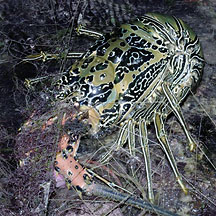
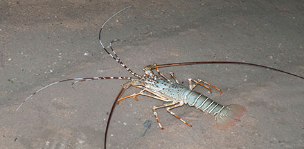
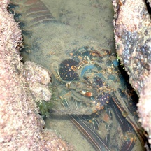
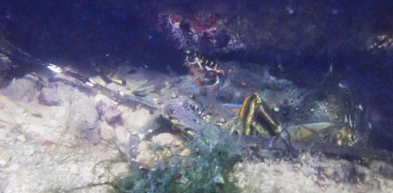

|
|
| lobsters text index | photo index |
| Phylum Arthropoda > Subphylum Crustacea > Class Malacostraca > Order Decapoda > Lobsters |
| Ornate
rock lobster Panulirus ornatus Family Palinuridae updated Mar 2020 Where seen? Large lobsters are sometimes encountered in Singapore! In deeper water at reefs, underwater rocky areas, even artificial sea walls and jetties. Sadly, often also entangled in abandoned driftnets. Elsewhere it is found in shallow, sometimes slightly murky coastal waters, from 1-8m, in sandy and muddy, sometimes on rocky bottoms, often near the mouth of rivers, but also on coral reefs. Features: 25-35cm long, up to 50cm long. Long abdomen with broad tail, large pincers, one larger than the other. Two pairs of very long thick antennae. Wide range of colours. Lobster lifestyle: It is solitary, may live in pairs and has been found in larger concentrations. Human uses: It is harvested everywhere, but on a small scale. |
 Lobsters are sometimes seen on the intertidal, sadly, usually in driftnets. St John's Island, May 06 |
 A lobster released from a driftnet. Jun 09 |
| Ornate rock lobsters on Singapore shores |
On wildsingapore
flickr
|
| Other sightings on Singapore shores |
 Seringat Kias, Apr 12 Photo shared by Loh Kok Sheng on his blog. |
 Big Sisters Island, Feb 25 Photo shared by Richard Kuah on facebook. |
|
Links
References
|